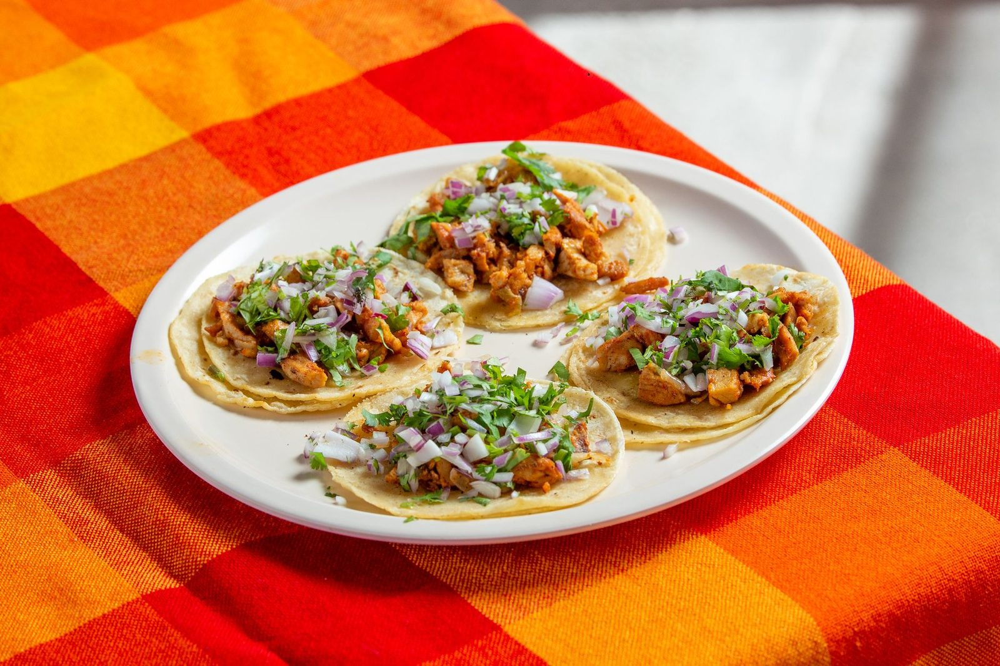

How it started
From a family kitchen to a truck on Guadalupe.
We started on the corner of Guadalupe in 2018 and never left. The recipes are my abuela’s, learned in my mom’s kitchen, cooked out of my truck for a neighborhood that showed up hungry. The al pastor off the trompo and the salsa people ask to buy by the jar — that’s us.
“The green salsa is dangerous. I dream about it.”
2018On Guadalupe, and never left
Al pastorCarved off the trompo
By the jarThe green salsa people ask for
